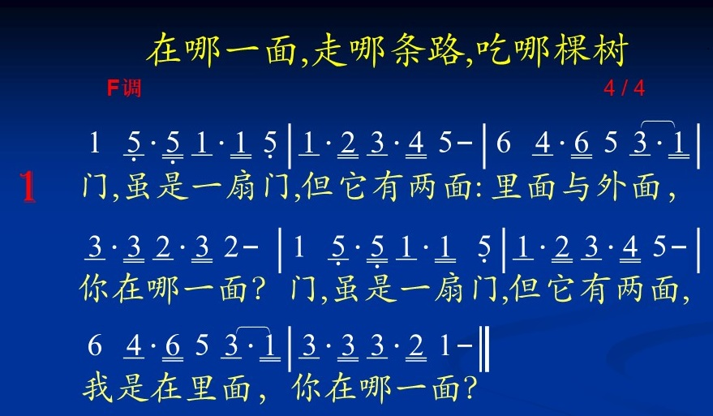
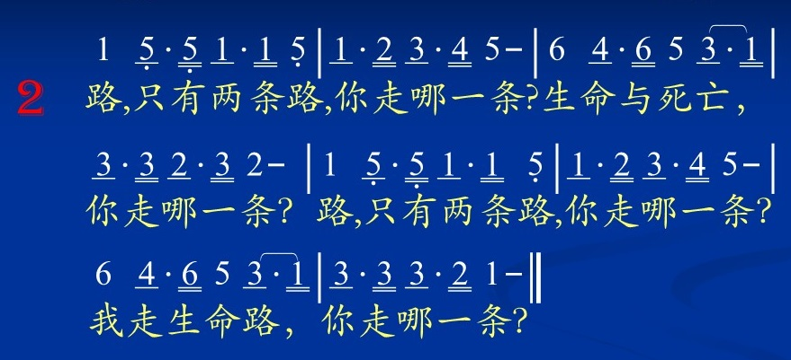
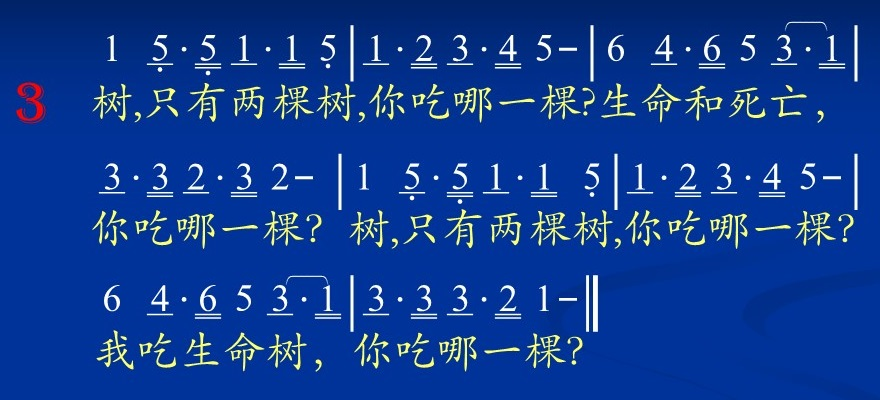

第十一篇之二 人生最高的享受（下）-如何享受神及操练
※诗歌
157首『主，当我们把你思念』；
253首『在我心中欢奏一音乐』；
299首『天程旅客的粮食』；
补203首『享受新鲜活泼的耶稣』；
补204首『享受主的丰富』；
补209首『生命树果』；
补212首『你何微小』；
补216首『喝！吃！看！』；
补712首『召会生活辉煌之至』；
补717首『预尝那日』；
旧诗131首『你在哪一面，你走哪一条』
※经节
一、『你们要尝尝，便知道耶和华是美善的投奔于祂的有福了。』(诗三十四 8)
二、『耶和华是我的产业，是我杯中的分 ；……在你面前有满足的喜乐；在你右手中有永远的福乐。』(诗十六5；9；11)
三、『他们必因你殿里的肥甘得以饱足，你也必叫他们喝你乐河的水。』(诗三十六 8)
四、『耶稣对他们说，我就是生命的粮，到我这里来的，必永远不饿；信入我的，必永远不渴。...我就是生命的粮。……我是从天上降下来的活粮，人若吃这粮，就必永远活着。(约六35；48；51)
壹、圣经明白地启示我们，神『是可以尝尝的、是可以享受的』-神降卑自己，为要给我们来认识祂、得着祂、经历祂并享受祂！
一、神要作『我们的生命』-『园子当中有生命树』(创二9中)『我来了，是要叫人得生命，并且得的更丰盛。』(约十10下)
1、在圣经中有一个非常重大的原则，就是每一类的事，头一次提到它的时候，那就是以后这类事一个永远的定律。头一次提到它是怎样，以后也必怎样。
2、在圣经里，头一次提到神之于人，乃是一个食物，摆在人跟前。那就是告诉我们，神是要给人来享受祂自己。人被造之后，神对于人的第一个观念，就是要人吃喝祂自己。
二、神要作『我们的丈夫』-『因为造你的，是你的丈夫，万军之耶和华是祂的名。』(赛五十四5)
三、神要作『我们的饮食』-是吗哪、是活水泉、是生命粮……。
四、神要作『我们的居所』-『主啊，你世世代代作我们的居所。』(诗九十1)；『住在我里面的，我也住在他里面。』(约十五5)
五、神要作『我们生命的光』-『我是世界的光，跟从我的……必要得着生命的光。』(约八12)
六、神要作『我们的能力、力量』-『耶和华是我的亮光、拯救、生命的力量。』(诗廿七1)；『我在那加我能力者的里面，凡事都能作。』(腓四13)
七、神要作『我们的爱、喜乐和安慰』
1、『耶和华啊，你的慈爱，及于诸天；你的信实，达到穹苍。你的公义，好像神的众山；你的判断，如同深渊；耶和华啊，人和牲畜，你都救护。』(诗卅六 6)
2、『我就到神的祭坛，到我最喜乐的神那里；神啊，我的神，我要弹琴赞美你。』(诗四十三 4)
3、『你们虽然没有见过祂，却是爱祂，如今虽不得看见，却因信入祂而欢腾，有说不出来、满有荣光的喜乐。』(彼前一 8)
4、『我们主耶稣基督的神与父，就是那怜恤人的父，和赐诸般安慰的神，是当受颂赞的。』(林后一 3)
八、神要作『我们的医治』-祂是『耶和华拉法』(出十五26原文)
1、『我儿，要留心听我的言语，侧耳听我的讲论。……因为对寻得的人，这些乃是生命，又是全身的医治。』(箴四 20；22)
2、『耶稣听见，就对他们说，强健的人用不着医生，有病的人才用得着；我来本不是召义人，乃是召罪人。』(可二 17)-这指明奴仆救主认为自己是那些因罪患病之人的医生。
九、神要作『我们的引导』-作云柱、火柱；作牧人。
十、神要作『我们的一切』-是全本圣经的主要启示。
1、『神对摩西说，我是那我是；又说，你要对以色列人这样说，那我是差我到你们这里来。』(出三 14)
2、作为『我是』，祂是包罗万有的一位，是一切正面事物的实际，也是蒙祂呼召并差遣者所需的一切。
3、『唯有基督是一切，又在一切之内。』(西三11下)【参：诗歌61首『恩主耶稣，你名「我是」』；374首『基督是万有唯一的实际。』】
贰、『神的心意』是要人『享受祂自己』
一、神首先，创造人『作器皿』好『盛装神作生命』-『耶和华神用地上的尘土塑造人，将生命之气吹在他鼻孔里，人就成了活的魂。』(创二 7)
1、『人的身体』是用地上的尘土『塑造的』，乃是人『外在的形状』，是人『接触物质范围的器官』。
2、『人的魂』是『他的人位』，就是『他的自己』，不是由某种元素所形成，乃是由『人的灵』与『人的身体』结合所产生。魂是由人的『心思、情感、意志』所组成，有心理的知觉，能『接触心理的范围』。
3、吹进人身体里的『生命之气』，就成了『人的灵』。『人的灵』是人『里面的器官』，使人能『接触神』，『接受神』，『盛装神』，并将神吸收到他全人里面，作他的生命和一切。
4、『这灵』是神特别造的，在神的圣言中列为『与天地并重』。（亚十二1。）『人的灵』是为着让人『敬拜神』,『由神重生』，并『联调于神』(林前六17，提后四22，）使人得以在『与神生机的联结里』生活、行事，以完成神的定旨。
5、『人的灵里』有三种功能：
*『良心』-使人能认识神所称义的与神所定罪的；常催促我们『认罪』并取用『主的宝血』。
*『交通』-使人能接触神、敬拜神、并与神来往交通、交流；常引发我们不住的『祷告』与『呼求主名』。
*『直觉』-使人对神有直接的感觉，直接的认识；常鼓舞我们『祷读主话』与『享受属灵书报』。
二、第二步，神将人『放在生命树跟前』，使人『接受神作生命』-『耶和华神在东方的伊甸栽植了一个园子，把所塑造的人安放在那里。耶和华神使各样的树从地里长出来，可以悦人的眼目，也好作食物；园子当中有生命树，还有善恶知识树。』(创二 8~9)
1、『生命树』表征『三一神具体化身在基督里』，以食物的形态『作人的生命』。
2、神把人摆在生命树跟前，指明『神』要人借着生机的『吃祂』并新陈代谢的『吸收祂』，接受祂作人的生命，使神能成为人『所是的构成成分』。
3、『生命树』长在生命水河的两边，指明生命树乃是一种『藤蔓vine 』(葡萄树)。因着基督是『葡萄树』，又是『生命』，祂就是『生命树』。祂经过了成为肉体、钉十字架、和复活的过程，使人能『得着生命』，并借着『吃祂』而活。
4、『善恶知识树』表征『撒但』是人『死亡的源头』-祂是掌死权的魔鬼。(来二14)。 这树也表征『一切神以外的事物』，因为它都会被撒但这狡猾者利用，将死带给人。就连神所默示的『圣经』和神所颁赐的『律法』，都会被撒但利用为『知识树』而带进死。(约五39~40，林后三6下。）
5、『生命树』叫人『倚靠神』(约十五5)，而『知识树』叫人『背叛神』且『向神独立』。这两棵树带进两条线—『生命线』和『死亡线』，贯穿整本圣经，结束于启示录。
三、『人的观念』误解了『神的心意』
1、今天，两千年过去了，但是我们还要在这里『非常着重的再点出来』，直到今天，每一个基督徒里面『对于神的观念 』，还都『不够准确』。不要说『平常的信徒』，连好多『事奉主的人』，这个观念都没有转得好。
2、譬如说，也许你已经得救很久了，恐怕就是到今天早上，你还没有多少观念是『要来享受神自己』；神是要把祂自己『供应我们，作我的享受』。也许直到今天早晨，你亲近神的时候，还有一种『普遍的宗教观念』-我应当好好的『敬拜神』；我应当在这一天里『作这样的事，作那样的事；不作这样的事，不作那样的事。』在那里求神说，『神，你恩待我，叫我能这样这样讨你的喜悦』。
3、但是，我愿意告诉弟兄姊妹，这一种的祷告完全是『出于宗教的观念』；神从来没有要我们这样的祷告。神每一次要我们亲近祂的时候，都是把祂自己『当作肥甘』，『当作食物』。，摆在我们跟前，给我们『吃一个饱足』。但就是这一个观念，我们『堕落的人』没有法子『转过来』。
4、我愿意在这里『再大声的呼喊』，点给神的儿女看。请你把你的『圣经再打开来』读一下，你就看见，神把人一造好之后，并没有告诉亚当说，你要怎样『敬拜我』，你要怎样『事奉我』。乃是把他摆在『那一棵生命树的跟前』，意思就是说，『亚当，你在这里享受吧』。
5、到了福音书，还是看见这样的故事。那一天『生命树来了』，祂说，『我就是生命的粮』；『吃我的，也要因我活着』；『我来了，是要叫人得生命，并且得的更丰盛』。
但是，没有一个人懂得，没有一个来摘祂的果子。都是问祂说，『主啊，我该作什么？』『主啊，律法中那一条的诫命是最大的？』问来问去，都是这些事。
6、主那些话就是说，我来了『并不是要人为我作什么』，我来了『乃是要进到人的里头』，『作人的享受』，『作人的食粮』，『作人的生命』。乃是要求人『把自己打开接受我到里面去』。不光在得救的时候，就是得救了之后，还要『天天接受我』，天天学习『住在我里面』，给我一个机会也『住在他们里面』。
7、我所要的，就是每一个得救的人『能把自己开启』，让我住在里面，我若能这样一直的住在他们里面，我的丰盛，我的成分，就要变作他们的享受，他们的福分，他们的供应；并且要『经过他们』，从他们身上『结出丰满的果子来』。
8、所以『结果子是在于享受神』；『祷告是在于享受神』；『为主申言或站讲台讲信息也是在于享受神』；『传福音结果子也是在于享受神』；『受引导也是在于享受神』；『基督徒的秘诀就在于享受神』
叁、『享受神』是在于『吃神、喝神』
一、神要人吃祂、喝祂而享受祂！
二、主耶稣是人的真粮、活粮、生命粮！（约六32~51)
三、神不要人『为祂作』，只要人『吃喝祂』。
四、神要人借着『吃祂、喝祂』而『像祂、活祂』。
五、全本圣经就是讲『神要给人吃喝』。
肆、『神的救恩』是重在叫人『吃祂、喝祂』
一、主要我们吃祂、喝祂而『因祂活着』。
1、『耶稣对他们说，我就是生命的粮，到我这里来的，必永远不饿；信入我的，必永远不渴。』
2、『活的父怎样差我来，我又因父活着，照样，那吃我的人，也要因我活着。』(约六57)
二
三、主作救主是在于给我们吃喝而『进到我们里面』！
四、在旧约的预表里，『救恩是重在吃喝』-吃逾越节筵席、吃吗哪、喝活水……等。
五、在新约的比喻里，『救恩也是重在吃喝』。
1、国度的婚筵-『看哪，我的筵席已经预备好了，公牛和肥畜已经宰了，各样都齐备，请来赴婚筵。』(太廿二 4)
2、浪子的比喻-『父亲却吩咐奴仆说，快把那上好的袍子拿出来给他穿，把戒指戴在他手上，把鞋穿在他脚上，把那肥牛犊牵来宰了，让我们吃喝快乐。』(路十五 23)
伍、『操练享受神』的『要点与诀窍』
一、要操练『管住头脑运用灵』来读经
1、神之于人乃是要来作人的食物。
2、圣经是神的发表、呼出，所以也是人的食物-『耶和华万军之神啊，我得着你的言语，就当食物吃了。』(耶十五16)『耶稣却回答说，经上记着，“人活着不是单靠食物，乃是靠神口里所出的一切话。”』(太四4)
3、所以，读经要管住头脑，运用灵。
二、要操练简单而读出圣经的本色
1、要把读经看作非常简单容易，就像吃饭一样。
2、不要存心要研究圣经中的道理，吃饱喝足再说。
3、要放下自己的观念，不可戴着『有色眼镜』来读圣经！
4、不要自己去找感动，一请记得，圣灵的感动是不需要你找的。圣灵的感动如同空中的无线电波一样，我们只要把灵里的周率对准了，那个电波自然就来了。
5、读经享受神总要学习简单，简单得像吃饭一样。
三、要操练『放弃』自己的观念而『读出』圣经的中心
1、带着自己的观念就读不出『圣经的本色』。
2、带着自己的观念也读不出『圣经的中心』。
3、读经的时候必须放弃自己原有的观念。
4、『圣经的中心』就是『神在祂儿子里面来作人的生命』。
四、要操练在圣灵里祷告；随着灵的感觉祷告；也要操练代祷、瞻仰、等候和默想。
陆、参考信息
一、如何享受神及操练(2018) 第一、二、七、八、十一、十二、十三～廿一篇
二、主的恢复—吃(2048) 第一篇
三、吃主(2058) 第一～四篇
四、生命树(2251) 第一、四篇
  